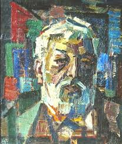

Салихтин Айтбаев

Мәліметтер:
т. 1936, Қазақстан, Ақтөбе

Салихтин Айтбаев, Пробуждение, 1995, 200 см x 150 см, Майлы бояу.
Салихтин Айтбаев: Түс пен Эмоцияның Саяхаты
Салихтин Айтбаев өзінің жарқын палитрасы мен эмоционалды тереңдігімен танымал, ол қазақ мәдениеті мен пейзаждарын бейнелеуде. Оның шығармалары Қазақстандағы өмірдің сұлулығы мен қиындықтарын көрсетеді, жиі дәстүрлі тақырыптарды заманауи техникамен біріктіреді.
Оның түс пен формадағы шеберлігі оған күшті эмоцияларды қозғауға және суреттері арқылы қызықты оқиғаларды баяндауға мүмкіндік береді.